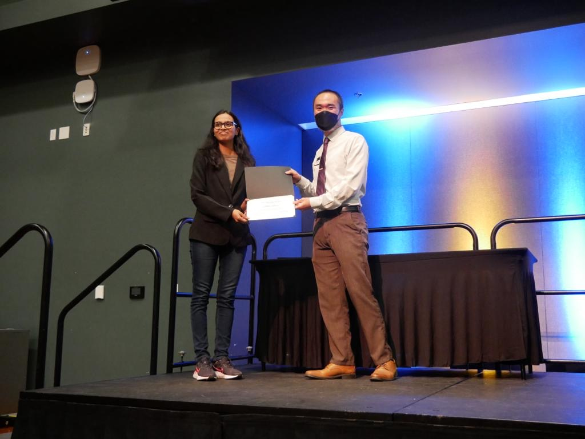

Sahiti Hibane
About
I am a recent Software Engineering graduate from San Jose State University
(SJSU). I have experience in web development, AI, and Machine Learning
with proficiency in Python, Java, HTML, CSS, JavaScript, and React. I am
passionate about solving world's various problems through the power of
technology.
Education
San Jose State University (August 2021 - May 2024)
B.S. Software Engineering (Honors Admit)
Coursework
Data Structures and Algorithms
Object-Oriented Design
Computer Networks
Operating Systems
Intro to Artificial Intelligence
Machine Learning for Big Data
Information Security
Computer and Human Interaction
Software Quality Engineering
Database Management Systems
Software Engineering Process Management
Discrete Math
Applied Probability and Statistics
Experience
Software Engineering Fellow, Headstarter AI
Instructional Student Aide, SJSU’s Computer Networks I
AI Student Researcher, SJSU Computer Engineering Department
AI/ML Officer, SJSU Software and Computer Engineering Society
SJSU Software and Computer Engineering Society x NVIDIA Student Network
Program Participant
President / Technical Session Lead, SJSU Hoplite
Raytheon Technologies Leadership Academy Participant, Girls Who Code
Event Planning Chair and Public Relations Chair, SJSU Software and
Computer Engineering Society
Projects
AWS Game Builder Challenge Hackathon Participant project
"SafeHer", Hackathon Participant, Google's Women Techmakers She Builds AI
“Online Virus Checker”, Full-Stack Developer, SJSU’s Server-Side Web
Programming Course
“Flask131”, Final Project Team Lead, SJSU’s Software Engineering I
“Study Spotters”, Participant, Google Software Product Sprint (SPS)
“Spatula”, 2nd Place Winner, IBM Good Tech Scholars Program (GTSP)
“Mask up, Vax In”, Scholar, Google Computer Science Summer Institute
(CSSI)
Skills
Programming Languages
Python
Java
JavaScript
C
C++
TypeScript
PHP
Swift
Front-End Development
HTML
CSS
Bootstrap
Tailwind CSS
Shadcn
JavaScript
TypeScript
React.js
Next.js
P5.js
SwiftUI
Back-End Development
Node.js
Express.js
Flask
PHP
Java
SQLAlchemy
Database Management
MySQL
MongoDB
PostgreSQL
XAMPP
Drizzle ORM
Data Science / Analysis / AI
Python
Pandas
NumPy
Matplotlib
Llama2
Gemini AI
OpenAI
Amazon Q Developer
Cloud & Deployment
AWS
Google Cloud
Docker
Testing
Jest
Postman
Version Control
Git
Operating Systems
Linux/Unix
Network Analysis / Security
Wireshark
Languages
English (Fluent)
Hindi (Fluent)
Telugu (Fluent)
Spanish (Limited)
Certificates / Credentials
Accomplishments
Students Advocacy Award by SJSU

Awarded to students who strongly advocate for social justice through
diverse forms of civic engagement, such as volunteer work and public
activism, to create a more socially-conscious campus community.
Senior Certificate in Carnatic Vocal Music by University of Silicon Andhra
Founder and President of WHS Sewa Club
WHS Sewa Club achievements
Leadership
SJSU Software and Computer Engineering Society (SCE) Event Planning Chair
SJSU Hoplite President / Technical Session Lead
SJSU Software Engineering I Course's Final Project Team Lead
SJSU Software and Computer Engineering Society (SCE) Public Relations
Chair
WHS Sewa Club Founder and President
College Board Opportunity Ambassador
Volunteering
WOW! That's Engineering Conference Volunteer
WHS Sewa Club's volunteering and service activities/events' Lead
Sewa International Volunteer
Hindu Swayamsevak Sangh (HSS) Volunteer
Blogs (My LinkedIn Insights' Posts)
Tribute to Ratan Tata sir, & Google AI studio workshop (1/4)
insights
Gemini API and RAG workshop (2/4) insights
Google AI on Edge workshop (3/4) insights
Gemma, Google's family of open LLMs, workshop (4/4) insights
Google Women in AI Summit 2024 insights and certificate
Cognizant x Codepath Generative AI training participation certification
announcement
5-Day Gen AI Intensive Course with Google Learn Guide completion
Google's Women Techmakers' She Builds AI Hackathon Project: "SafeHer"
presentation
AWS Game Builder Challenge Hackathon Project presentation
Portfolio website presentation
My CS journey so far and special thanks to mentors and well-wishers
CS Advice/Resources
Contact
Feel free to connect with me!
LinkedIn
GitHub
Email
YouTube
Instagram